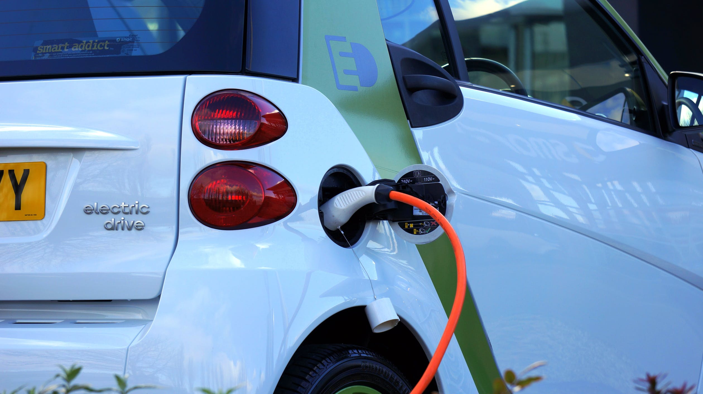
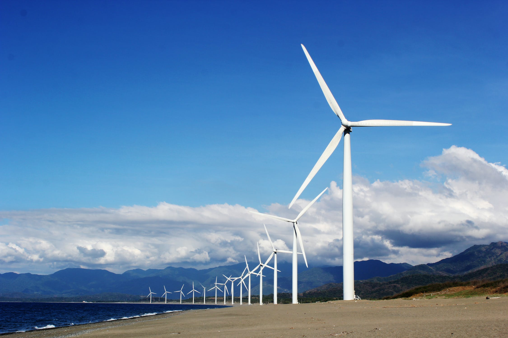
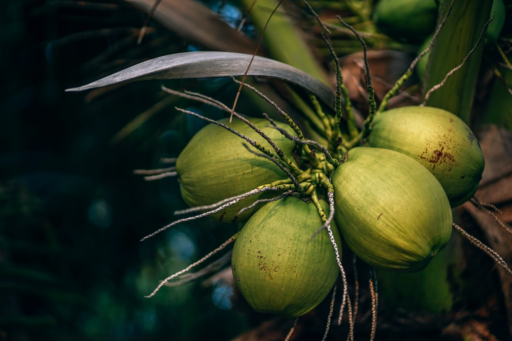

O que é um Objetivo de Desenvolvimento Sustentável?
Em 2015, a ONU criou 17 Objetivos de Desenvolvimento Sustentável baseados nos Objetivos de Desenvolvimento do Milênio para acabar com a pobreza, promover a prosperidade e o bem-estar para todos, proteger o meio ambiente e enfrentar as mudanças climáticas. Naquele ano, os países puderam aderir a uma agenda de desenvolvimento sustentável e chegar a um acordo global sobre essas questões. Neste site, será abordado o Objetivo de Desenvolvimento Sustentável 9 - Indústria, Inovação e Infraestrutura, que visa construir infraestruturas resilientes, promover a industrialização inclusiva e sustentável e fomentar a inovação.
Inovar
O desenvolvimento tecnológico, a pesquisa e a inovação nacionais são pontos levantados pela ONU no Objetivo de Desenvolvimento Sustentável 9, especialmente para os países em desenvolvimento. Mas como podemos alcançar este nível de evolução nestas áreas? A melhor forma de se atingir este objetivo é com o apoio e financiamento de empresas, ONGS (como a JA Brasil) e até mesmo do governo em pessoas interessadas nas áreas de tecnologia e ciência. Com o devido acompanhamento, profissionais cada vez mais capacitados estarão compondo o mundo da inovação e, desta forma, o desenvolvimento tecnológico e as pesquisas estarão cada vez mais fortes e trabalhando em prol da sociedade. Em relação às empresas, com investimentos em novos profissionais (ou até mesmo em desenvolvimento de profissionais já existentes), além do benefício da evolução já citada há também o lucro que elas terão com mais pessoas capacitadas trabalhando e gerando capital.
Vídeo Institucional da ONG JA Brasil
Neste vídeo, podemos ver um exemplo de investimento em inovação que é o trabalho feito pela ONG Junior Achievement com patrocínio da Microsoft. Desta forma, não só os alunos têm a oportunidade de mudarem de vida como também se tornam capazes de transformar outras vidas e trazer retorno à sociedade com suas habilidades.
Facilitar o desenvolvimento de infraestrutura sustentável e resiliente em países em desenvolvimento é outra meta da ONU no ODS 9. Para alcançar isto, é preciso investir em infraestruturas que não agridam o meio ambiente e que atendam às necessidades humanas de forma eficaz, garantindo serviços básicos e de qualidade à população(saneamento, energia, transporte). O investimento em pesquisa se torna ainda mais necessário para descobrir as melhores formas de se utilizar infraestruturas confiáveis e sustentáveis. Por exemplo, investir e popularizar meios de transporte urbanos elétricos já que estes não poluem o ar com gás carbônico, viabilizar e utilizar ainda mais a energia eólica, solar, entre outras fontes renováveis, buscar materiais menos nocivos ao meio ambiente para construção de estradas, prédios e relacionados. Tudo isso gera qualidade de vida à população sem afetar de forma maléfica a natureza. É válido citar um exemplo de matéria-prima que é a casca de côco verde, a qual é muito utilizada na construção civil por ser muito rica em fibras e, desta forma, o desperdício vira reutilização e o meio ambiente agradece.
Carros elétricos não emitem gás carbônico

Eólicas - Energia Renovável

Casca de Côco Verde é utilizada na construção civil

Conectar
A pandemia do Coronavírus mostrou a importância da internet para todos nós. O trabalho em casa(Home Office) virou algo comum no mundo todo graças a possibilidade de poder fazer literalmente tudo através de um smartphone ou computador. Quando paramos para pensar que existem ainda pessoas desconectadas por motivos diversos como preços inacessíveis e locais isolados sem acesso à internet, vemos que, apesar de revolucionária, a web ainda não é 100% democrática. Por isso, a ONU quer democratizar a internet aumentando seu alcance para que todas as pessoas tenham acesso e deixar os preços mais acessíveis. É necessário que as empresas do ramo da internet levem acesso às regiões rurais com seus satélites e antenas, nem que seja de dados 3G, para atender as populações locais a preços justos, visando o lucro mínimo já que, nestes locais, as pessoas geralmente são mais humildes e nem todas irão consumir.
Por dentro do ODS9
Para saber mais sobre o Objetivo de Desenvolvimento Sustentável 9, basta acessar este link ou clicar na imagem abaixo que será redirecionado à um portal oficial da ONU, o qual disponibiliza matérias sobre eventos, notícias, pesquisas, dados e informações sobre o assunto.